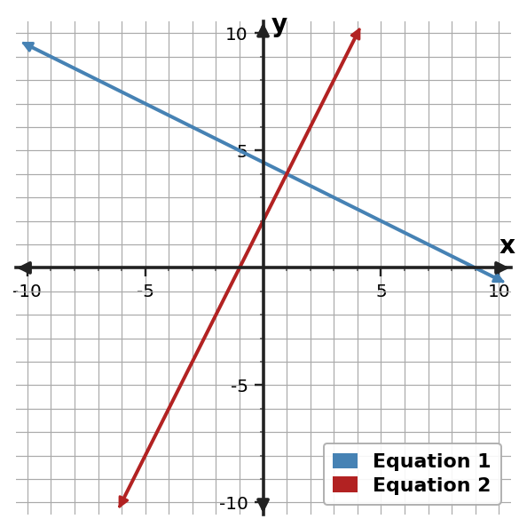

Section 3.1: Graphing and Elimination
Guided Notes
Use representations and algebra to identify values that satisfy multiple relationships or constraints.
Learning Target
Students will solve systems graphically and by elimination while interpreting the meaning of different solution types.
- I can construct graphical representations of systems and connect intersection points to solutions.
- I can use elimination to solve systems and interpret the solution type.
- I can determine whether a system has one solution, no solution, or infinitely many solutions from algebraic and graphical evidence.
Vocabulary / Key Notation Preview
system of equations • intersection • elimination • one/no/infinitely many solutions
Sort the vocabulary. Write each vocabulary word in the column that best matches what you know right now. You may move a word later.
| Know for sure | Recognize | Don't know yet |
|---|---|---|
What's to Come
DO NOT SOLVE IT YET.
Circle anything familiar, underline symbols, labels, conditions, data, or features that seem important, and write short notes about what you think may matter later.
Two plans are shown on the same graph. Without using a formal system-solving algorithm, describe what the intersection tells you, estimate the intersection, and explain what would be different if the two lines never met.

Let's Get Started
Skim the section. Record what catches your attention before you read closely.
| What I noticed | |
|---|---|
| What I predict | |
| What I wonder |
READ IN SHORT CHUNKS.
Annotate the words and visuals together. Underline evidence, circle or highlight bold vocabulary, label arrows, measurements, or important features, connect sentences to figures, and jot short questions or connections in the margins.
I can construct graphical representations of systems and connect intersection points to solutions.
A system of equations asks for values that make two equations true at the same time. Each equation may describe its own line, table of values, or rule, but a solution to the system has to belong to both relationships. On a coordinate graph, that shared solution appears at an intersection: the point where both lines contain the same ordered pair.
The coordinates of an intersection carry two pieces of information. The $x$-coordinate is the input shared by both relationships, and the $y$-coordinate is the output they have in common at that input. In a context, the same point can mark a moment when two plans cost the same, two quantities are equal, or two conditions are simultaneously satisfied.
A table shows the same idea numerically. If two equations are evaluated at the same $x$-values, look for a row where the two $y$-values match. That row gives the ordered pair that satisfies both equations. The graph and table are not different definitions of solution; they are different ways of seeing the same shared pair.
Because the solution must satisfy both equations, it can always be checked by substitution into the original equations. A point that lies on only one line is a solution to one equation, not to the system.
- Why must a solution to a system belong to both relationships?
- In a table of two equations, what numerical pattern identifies an intersection?
- If a graph shows a point on one line but not the other, what does that tell you about that point?
| Representation | Evidence of the shared solution |
|---|---|
| Graph | The lines meet at the same ordered pair. |
| Table | At one $x$-value, both equations produce the same $y$-value. |
| Equations | The ordered pair makes both equations true. |
| Context | Both conditions are true for the same pair of quantities. |
Example 1: Read the Intersection
Use the graph to determine the solution of the system.

You Try It 1: Read the Intersection
Use the graph to determine the solution of the system.

Example 2: Find the Shared Table Value
Use the table to identify the ordered pair that satisfies both equations.
| x | Equation 1 y | Equation 2 y |
|---|---|---|
| -1 | 5 | 0 |
| 0 | 9/2 | 2 |
| 1 | 4 | 4 |
| 2 | 7/2 | 6 |
| 3 | 3 | 8 |
You Try It 2: Find the Shared Table Value
Use the table to identify the ordered pair that satisfies both equations.
| x | Equation 1 y | Equation 2 y |
|---|---|---|
| -4 | -4 | 4 |
| -3 | -1 | 3 |
| -2 | 2 | 2 |
| -1 | 5 | 1 |
| 0 | 8 | 0 |
I can use elimination to solve systems and interpret the solution type.
Elimination solves a system by combining equivalent equations so that one variable disappears. The key idea is not to “cancel letters” by appearance. Instead, we use addition, subtraction, or multiplication to create opposite coefficients while preserving each equation’s solution set.
When an entire equation is multiplied by the same nonzero number, the new equation is equivalent to the original one. That is why multiplying $x-y=1$ by $-2$ must give $-2x+2y=-2$: every term on both sides changes. Multiplying only one term breaks the equality and changes the constraint.
Once opposite coefficients are present, adding the equations can create a one-variable equation. Solve that equation, then substitute the value back into either original equation to find the other coordinate. The result should be written as an ordered pair because a system solution names values for both variables.
A final substitution check matters. Elimination steps can be algebraically correct-looking even when a sign or multiplier error occurred. A true solution makes both original equations true, not just the last equation produced during the work.
- Why must a multiplier be applied to every term of an equation during elimination?
- What feature tells you that adding two equations will eliminate a variable immediately?
- Why should the final ordered pair be checked in both original equations?
Example reference:
$2x+y=7$ and $3x-y=8$. Adding the equations gives $5x=15$.
The $y$-coefficients are opposites, so adding the equations removes $y$ without changing the shared solution. Then $x=3$, and substituting back gives $y=1$.
Example 3: Eliminate a Variable
Solve by elimination the system. $\begin{cases}x+y=8\\2x-y=1\end{cases}$
You Try It 3: Eliminate a Variable
Solve by elimination the system.
$\begin{cases}2x - y = 9\\ x + 2y = 2\end{cases}$
- Why does an intersection point carry the same mathematical meaning whether you find it from a graph or a table?
Example 4: Critique an Elimination Step
A student tries to eliminate $y$ from $2x+y=7$ and $3x-y=8$ by subtracting the equations. Identify the error and state the efficient elimination operation.
You Try It 4: Critique an Elimination Step
To eliminate $x$ from $2x+3y=12$ and $x-y=1$, a student multiplies only the $x$-term in the second equation by $-2$. Identify and correct the error.
I can determine whether a system has one solution, no solution, or infinitely many solutions from algebraic and graphical evidence.
Linear systems can have one solution, no solution, or infinitely many solutions. Graphically, one solution means two different lines intersect once. No solution means two distinct parallel lines never meet. Infinitely many solutions means the two equations describe the same line, so every point on that line satisfies both equations.
Algebra gives the same evidence. If elimination eventually produces a true statement such as $0=0$, the equations are equivalent and the system has infinitely many solutions. If it produces a false statement such as $0=4$, the equations cannot be true at the same time, so the system has no solution.
Slope and intercept information can also reveal the type before solving. Different slopes force a single intersection. Equal slopes with different intercepts create parallel lines. Equal slopes and equal intercepts describe the same line, even if the two equations initially look different.
Classifying a system is more than naming a category. The classification explains the relationship between the constraints: one shared pair, no shared pair, or every pair along the same line.
- What graph pattern corresponds to each of the three possible solution types?
- What does a false statement such as $0=4$ mean about a system?
- How can two equations look different and still have infinitely many solutions?
| Graph evidence | Algebra evidence | Solution type |
|---|---|---|
| Different slopes; lines intersect once | A unique ordered pair results | One solution |
| Same slope, different intercepts | A contradiction such as $0=4$ | No solution |
| Same line | An identity such as $0=0$ | Infinitely many solutions |
Example 5: Classify Parallel or Equivalent Lines
Classify the system as one solution, no solution, or infinitely many solutions. $\begin{cases}y=2x+1\\ y=2x-4\end{cases}$
You Try It 5: Classify Parallel or Equivalent Lines
Classify the system as one solution, no solution, or infinitely many solutions. $\begin{cases}y=-x+3\\2x+2y=6\end{cases}$
Example 6: Classify from Algebraic Structure
Classify the system as one solution, no solution, or infinitely many solutions. $\begin{cases}y=\frac12x-2\\ y=-x+4\end{cases}$
You Try It 6: Classify from Algebraic Structure
Classify the system as one solution, no solution, or infinitely many solutions. $\begin{cases}3x-y=5\\6x-2y=14\end{cases}$
Summary
- A system solution makes every equation in the system true at the same time.
- On a graph, a shared solution is an intersection; in a table, it is a row where both relationships produce the same ordered pair.
- Elimination works by combining equivalent equations to create a one-variable equation.
- Multipliers must apply to every term on both sides of an equation.
- Linear systems can have one solution, no solution, or infinitely many solutions, and graph/algebra evidence should agree.
Common Mistakes
| Common mistake | Better habit |
|---|---|
| Assuming every system has one solution. | Check slopes, intercepts, or elimination evidence for parallel or identical lines. |
| Multiplying only one term when preparing elimination. | Apply the multiplier to every term on both sides of the equation. |
| Stopping after finding only $x$ or only $y$. | Find both coordinates and state the ordered-pair solution. |
| Checking work in only the transformed equation. | Verify the final pair in both original equations. |